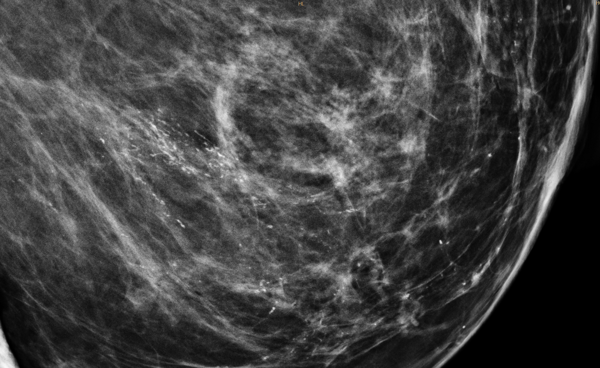

Ficha del catálogo
Microcalcificaciones sospechosas
- Sistema
- Mama
- Modalidad
- RX
- Región
- Mama
- Dificultad
- Avanzado
Son depósitos de calcio de menos de un milímetro cuya morfología y distribución sugieren un proceso maligno subyacente. Constituyen con frecuencia la única manifestación del carcinoma ductal in situ y por ello son el hallazgo clave del tamizaje mamográfico. Su análisis exige magnificación y una descripción sistemática de forma y agrupamiento.
Técnica
Se estudian con mamografía de magnificación en proyecciones craneocaudal y lateral estricta, que permite valorar la morfología individual y detectar sedimentación en calcificaciones de leche de calcio. La tomosíntesis ayuda a separar el hallazgo del tejido superpuesto. La biopsia estereotáxica con radiografía de las muestras confirma que las calcificaciones fueron extraídas.
Qué observar
- Morfología individual: Pleomorfa, amorfa, gruesa heterogénea o lineal ramificada
- Distribución: Agrupada, lineal, segmentaria, regional o difusa
- Número de partículas por unidad de volumen
- Asociación con masa, distorsión o asimetría
- Cambio respecto a estudios previos en número o extensión
- Comportamiento en la proyección lateral estricta
Hallazgos
Las calcificaciones de alta sospecha son finas pleomorfas, de tamaño y forma variables, o finas lineales y ramificadas que moldean la luz de un conducto. La distribución lineal o segmentaria refuerza la sospecha porque sigue el trayecto ductal. Las amorfas y las gruesas heterogéneas ocupan una categoría intermedia de sospecha y también requieren muestreo.
Perlas
La distribución tiene tanto o más peso que la morfología: Un grupo de calcificaciones de aspecto poco alarmante pero con disposición segmentaria sigue el árbol ductal y eleva de manera significativa la sospecha, mientras que calcificaciones dispersas y bilaterales suelen ser benignas.
Diagnóstico diferencial
- Calcificaciones vasculares
- Son lineales y paralelas, en rieles de tren, siguiendo el trayecto de un vaso.
- Leche de calcio
- Aparecen redondeadas en craneocaudal y sedimentadas en semiluna en la proyección lateral estricta.
- Calcificaciones cutáneas
- Son lucentes en el centro y se localizan en el plano de la piel al hacer proyecciones tangenciales.
- Necrosis grasa
- Forman anillos o cáscaras de huevo alrededor de quistes oleosos con antecedente traumático o quirúrgico.
Simuladores
- Artefacto por talco o desodorante sobre la piel
- Calcificaciones vasculares incipientes con aspecto punteado
- Polvo o partículas en el detector o el chasis
Por modalidad
- TC
- No tiene resolución suficiente para valorar microcalcificaciones y no se usa con este fin.
- US
- Puede identificar focos ecogénicos agrupados en lesiones extensas, pero no sustituye a la magnificación mamográfica.
Protocolo
Mamografía de magnificación a dos aumentos con foco fino en craneocaudal y lateral estricta de la zona de interés. Se documenta la extensión del grupo en milímetros para planificar la cirugía. Tras la biopsia estereotáxica se radiografían los cilindros y se coloca un marcador metálico en el lecho.
Clasificación
El léxico BI-RADS clasifica las calcificaciones en típicamente benignas, de sospecha intermedia y de alta sospecha, y combina morfología con distribución para asignar la categoría final. Las de alta sospecha con distribución lineal o segmentaria suelen corresponder a categoría 4C o 5 e implican biopsia.
Errores frecuentes
- Valorar la morfología sin analizar la distribución
- No realizar proyección lateral estricta y pasar por alto leche de calcio
- Subestimar la extensión del grupo y comprometer la planificación quirúrgica

microcalcificaciones mama carcinoma in situ BI-RADS magnificación distribución segmentaria estereotaxia